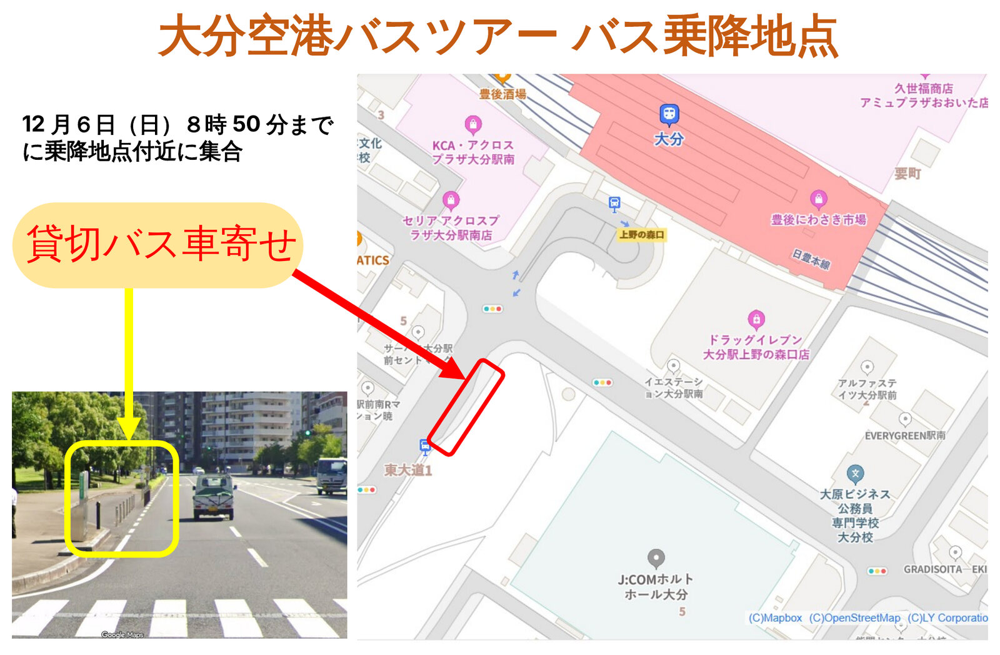

大会最終日の12月6日（日）に、大分空港の制限区域内から飛行機の離発着を見学するバスツアーを行います。大分空港が宇宙港に適した条件を備えていることを、実地にご覧いただく機会です。
概要
| 日時 | 2026年12月6日（日）9:00〜12:10 大分市内と大分空港のあいだの移動を含みます。 |
|---|---|
| 集合 | 8:50までに、J:COMホルトホール大分 前の貸切バス乗降地点にお集まりください（下の案内図をご覧ください）。 |
| 内容 | 制限区域内から、飛行機の離発着を見学します。 |
| 対象 | 第72回 日本宇宙航空環境医学会大会の参加者 |
| 参加費 | 無料 |
| 定員 | 40名（先着順） |
| 受付開始 | 2026年11月2日（月）正午 |
| 申込締切 | 2026年11月27日（金）正午 ただし、定員に達し次第、これより前に締め切る場合があります。 |
当日の詳しい行程は、お申し込みいただいた方に別途お知らせします。
※ 同じ日の13:30からは、同じJ:COMホルトホール大分にて市民公開講座を開催いたします（参加無料・事前申込不要）。詳しくはプログラム（12月6日）をご覧ください。
バス乗降地点
12月6日（日）8:50までに、下の案内図の「貸切バス車寄せ」付近にお集まりください。JR大分駅 上野の森口（南口）の近く、J:COMホルトホール大分 わきの道路沿いです。

※ 図をクリック（タップ）すると、拡大してご覧いただけます。
お申し込み
受付は2026年11月2日（月）正午に開始します。開始後は、下のボタンからフォームを開いてお申し込みください（先着順・定員40名）。
※ 受付開始の時刻になると、ボタンからお申し込みいただけるようになります（ページを再読み込みしてください）。Googleフォームが別のタブで開きます。送信後、ご記入のメールアドレスに受付のご連絡が届きます。
フォームでは、次の項目をご記入いただきます。
- 所属
- 氏名
- ふりがな
- 性別
- 連絡先メールアドレス
個人情報の取り扱いについて：ご記入いただく所属・氏名・ふりがな・性別は、空港の制限区域への立入許可の手続きに必要な情報で、この手続きのために大分県および空港の関係機関に提供します。メールアドレスは、受付のご連絡に用います。お申し込みの情報は、本ツアーの運営以外の目的には使用しません。
定員に達した場合は、このページでお知らせします。
定員に達した場合は、このページでお知らせします。
お問い合わせ
ツアーに関するお問い合わせは、大会事務局までメールでお寄せください。件名に「空港ツアー」と添えていただけますと、お返事が早くなります。